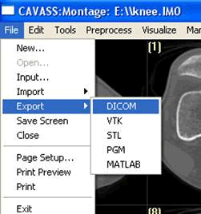
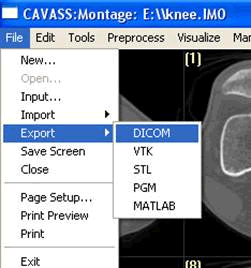

CAVASS Tutorial MIPG
A.4 Converting CAVASS files into DICOM format
Select an input IM0 or BIM files. Click on File > Export > DICOM, then click on Save.  The DICOM files will be saved under output pathway.
Select an input IM0 or BIM files. Click on File > Export > DICOM, then click on Save.

The DICOM files will be saved under output pathway.